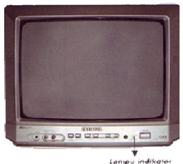
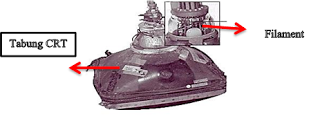
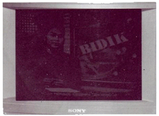
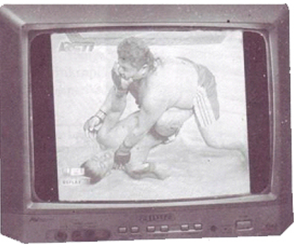
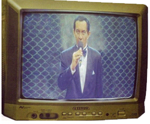
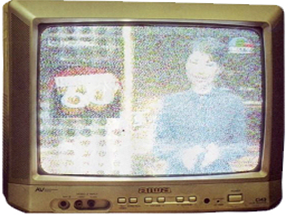
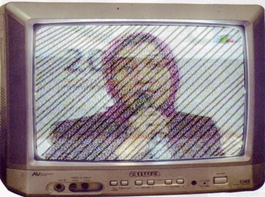

Universitas Negeri Semarang
Fakultas Teknik
Jurusan Teknik Elektro

Reparasi TV
Memperbaiki TV hendaklah dilakukan dengan hati-hati dan teliti karena dapat berakibat fatal. Televisi adalah pesawat elektronik yang memilki tegangan listrik tinggi. Disamping itu, dari semua kerusakan belum tentu disebabkan oleh komponen yang rusak. Adakalanya rusak karena solderan timah yang kurang baik sehingga kaki-kaki komponen tidak tersambung sempurna ke PCB. Gejala dan penyebab kerusakan TV bermacam-macam. Gejala yang timbul dapat berupa mati total, tidak ada suara atau gambar yang dihasilkan jelek. Sementara itu, kerusakan TV dapat pula disebabkan oleh komponen yang sudah dimakan usia atau hubungan antar komponen yang kurang sempurna
Ada beberapa kerusakan yang bisa mengakibatkan TV tidak dapat bekerja sama sekali. Pada umumnya kerusakan semacam ini terjadi pada bagian catu daya (Power Supply) atau rangkaian defleksi horizontal
- TV Mati Total dan Lampu Indikator Padam
- Penyebab : Kerusakan pada rangkaian catu daya
- Solusi : Memeriksa jala-jala listrik dan rangkaian regulator input sampai output
- Terdengar Suara Derit Getaran Trafo Switching
- Penyebab : Tegangan output terhambat karena ada komponen yang rusak
- Solusi : Lepas Dioda Output B+, periksa diode, apabila diode baik berarti kerusakan pada bagian horizontal (Transistor Horizontal Out dan FBT)
- Lampu Indikator Menyala Tetapi Gambar dan Suara Tidak Muncul
- Penyebab : kerusakan pada bagian Supply IC MCU atau IC MCU itu sendiri yang rusak
- Solusi : Lepas Pin Output transistor regulator 5v, periksa Tegangan apabila tidak ada kerusakan terjadi pada diode supply dan transistor regulasi, apabila ada tegangan, beraerti kerusakan pada IC MCU
Pada umumnya catu daya TV mempunyai output tegangan sebesar 115 V, 24 V dan 5 V, tergantung merek TV- nya. Ganti komponen yang rusak dan perbaiki jalur rangkaian yang kurang sempurna
-

- Penyebab : Rangkaian penguat video dan pembatas tegangan tinggi atau CRT rusak
- Solusi :
- Periksa tegangan video 180v
- Jika diukur tidak ada tegangan, periksa diode video out dan R fusebile
- jika saat mengukur tegangan normal semua, kerusakan yang sering terjadi adalah filament putus sehingga CRT tidak memancarkan cahaya 
Raster tidak menyala terang meskipun posisi screen flyback pada maksimum
- Penyebab : Tegangan anoda CRT terlalu rendah akibat adanya kerusakan pada rangkaian tegangan tinggi, rangkaian defleksi horizontal atau rangkaian catu daya. Tegangan semua katoda CRT menjadi besar karena gangguan pada penguat video sehingga terjadi proteksi otomatis picture mute
- Solusi :
- Periksa tegangan video output 180v
- Jika normal, periksa tegangan input penguat video
- Jika normal, periksa rangkaian tegangan tinggi. Biasanya resistor mengalami kerusakan
- transistor picture mute rusak
- Penyebab : rangkaian vertical tidak bekerja
- Solusi : Periksa rangkaian defleksi vertikal dan Periksa seluruh elektroda IC dan diode osilasi vertikal
- Gambar Sempit
- Penyebab : Kerusakan seperti ini jarang sekali terjadi pada TV keluaran baru. Tegangan output horizontal lebih rendah sehingga rangkaian arus gigi gergaji pada kumparan defleksi horizontal (yoke) bertambah lemah
- Solusi :
- Periksa tegangan output catu daya B+ ( elco sering rusak )
- Jika tegangan outputnya lebih rendah, Periksa komponen-komponennya
- Pelebaran Horizontal
- Penyebab : V amp tidak kerja
- Solusi :
- Periksa resistor vertical in
- Periksa elco filter supply vertical
-

-

- Noise Salju Pada Gambar
- Penyebab : Intensitas medan pada tempat penerimaan sinyal frekuensi rendah. Sistem antena TV rusak. Rangkaian penguat frekuensi tinggi rusak
- Solusi :
- Putar arah antenna sampai didapatkan gambar bagus
- Perbaiki jalur antena kabel
- Periksa solderan pada blok tuner dan AGC.
- Muncul Garis Miring
- Penyebab : Biasanya gangguan dari pemancar radio
- Solusi : Jauhkan antena dan TV dari sumber frekuensi gangguan
-

-

- Penyebab : Gangguan dari busi motor, mobil atau kawat distribusi listrik tegangan tinggi
- Solusi : Jauhkan antena dan TV dari kabel listrik tegangan tinggi. Gunakan kabel koaksial untuk antena TV